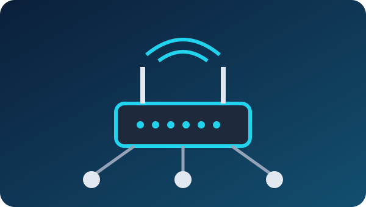
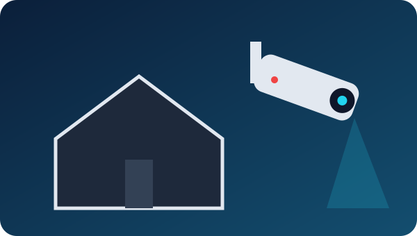
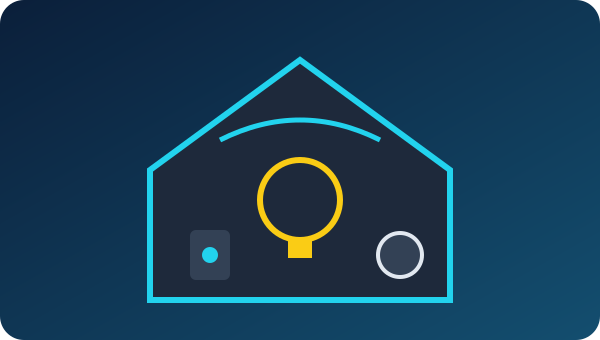

Moundsville, West Virginia
Setup
Custom PCs, gaming PCs, home networks, home offices, security cameras, and more — set up for your home.
Collins Tech LLC helps Moundsville homes get new technology set up and working right. Tell us what you need and we'll help plan it and set it up. Residential service only.
Custom PC builds
A computer built around what you actually do — schoolwork, office work, photo and video editing, or running AI tools. We help pick the parts, build it, install the operating system, and get it ready to use. More about computers.
Gaming PC builds
A gaming PC built for the games you play. We help choose the graphics card, processor, memory, storage, and cooling, then assemble it, set it up, and get your games and drivers installed.

Home network setup
Router and Wi-Fi setup, wired connections, PoE, and long-range wireless for spots the Wi-Fi doesn't reach. We help get every room and device connected. More about networking.
Home office setup
Get your work-from-home space ready: computer, monitors, printer, webcam, and a solid internet connection, all set up and working together.

Home security camera setup
Security camera systems for your home. We help plan where the cameras go, install and connect them, and set up viewing on your phone.

Smart home and other devices
Smart TVs, streaming devices, smart speakers, smart lights, printers, and new phones or tablets. If it needs to be set up or connected, ask us.
Ready to get started?
Call (304) 312-2376 or stop by 505 Grant Ave, Moundsville, WV 26041 · Mon–Fri 9AM–6PM. Contact us for a quote.